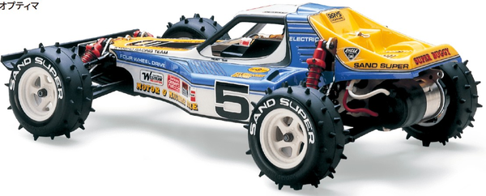

京商 オプティマ

引用元画像：京商公式サイト
📋 基本情報
| メーカー | 京商（Kyosho） |
|---|---|
| 機種名 | オプティマ（Optima） |
| シャーシ略称 | オプティマ |
| 型番 | 30622（オプティマミッド 2022年復刻版） |
| 発売時期 | 初代：1985年 / オプティマミッド初代：1987年 / 復刻版：2022年3月 |
| 価格 | 初代：¥21,800（当時価格）/ 復刻版：¥54,780（税込） |
| 生産状況 | 現行販売中（オプティマミッド 復刻版） |
| カテゴリー | ラジコンカー（1/10スケール 電動RCカー） |
| サブカテゴリー | 4WDレーシングバギー（オフロード） |
| シリーズ | ビンテージシリーズ 第10弾（オプティマミッド） |
📚 オプティマ系譜（1985年～）
【生産終了モデル】チェーンドライブ系
| オプティマ（初代） | 1985年発売。チェーンドライブ採用の4WDバギー。 アルミ製ハシゴ型シャシー、4輪ダブルウィッシュボーンサスペンション。 全長405mm、全幅231mm、全備重量1,550g、価格¥21,800 |
|---|---|
| ターボオプティマ | 8.4Vバッテリー対応の強化モデル。 ル・マン240Sモーター標準装備。 |
| オプティマプロ | アンプ（ESC）仕様モデル。チェーンドライブ最後のオプティマ。 アンダーカウル付属。正式名称「オプティマ・プロ4WD」。 |
【生産終了モデル】ベルトドライブ系
| オプティマミッド（初代） | 1987年発売。モーターをミッドシップ配置に変更。 シャシーはジュラルミンとFRPによるダブルデッキ構造。 1987年第2回世界選手権で5台がA-Main進出、準優勝の快挙。 |
|---|---|
| ターボオプティマミッド | オプティマミッドの上位モデル。オプションパーツが多数付属。 |
| ターボオプティマミッドスペシャル | ホイールベース延長、振り分けバッテリー対応。 カーボンファイバー製シャシー採用。 1店舗4台限定のオプティマ系最強モデル。アンダーカウル付属。 |
| オプティマミッドカスタム | ターボオプティマミッドスペシャルの廉価版。 メインシャシーはジュラルミン製。アンダーカウル付属。 |
| オプティマミッドカスタムスペシャル | オプティマミッドカスタムの上位モデル。 ほぼターボオプティマミッドスペシャルと同等だがシャシーはジュラルミン製。 ビュレットタイプボディ、アンダーカウル付属。 ロングホイールベース（+18mm）仕様。 |
【現行販売中】復刻版
| オプティマミッド（2022年復刻版） | 2022年3月発売。ビンテージシリーズ第10弾。 1987年オプティマミッドを現代技術でアップデート。 型番：30622、価格：¥54,780（税込） |
|---|
📏 シャーシスペック（2022年復刻版）
| 全長 | 詳細不明（初代ミッドは約380mm） |
|---|---|
| 全幅 | 詳細不明（初代ミッドは約220mm） |
| 全高 | 詳細不明（初代ミッドは約130mm） |
| ホイールベース | 詳細不明 |
| トレッド | 詳細不明 |
| フレーム | 6061T6アルミ合金製メインシャシー（高剛性・耐クラッシュ性） ※皿穴加工でフラットサーフェス化 |
| 全備重量 | 約1,600g（電装品別） |
⚙️ 駆動系（2022年復刻版）
| 駆動方式 | ベルトドライブ4WD |
|---|---|
| モーター配置 | ミッドシップレイアウト ※重量物をシャシー中央に集中配置し運動性能向上 |
| ベルトテンショナー | 標準装備（ベルトテンション調整可能） ※初代には無かった機能 |
| ベルトカバー | 樹脂成型品（初代：真空成型品） ※組立て易さと防塵性能を改善 |
| ギヤ比 | 48ピッチピニオン＋82Tスパーギヤ（Ultima RB7と共通） ※オプションで78T/80Tスパーギヤも使用可能 |
| スリッパークラッチ | 強化型標準装備（ブラシレスモーター対応） ※Ultima RBスリッパーシートで調整可能 |
| モーター | 540クラス（別売） ※ブラシレスモーター対応（21.5Tまで推奨） |
🔧 サスペンション（2022年復刻版）
| 形式 | 4輪ダブルウィッシュボーン独立懸架 |
|---|---|
| サスアーム | FRP製フロント・リアショックステー ※初代アルミ製からターボオプティマミッド仕様に変更 |
| ダンパー | ゴールドアノダイズ仕上げオイルダンパー ※プレッシャーダンパー風デザイン ※ダイヤル式車高調整機能搭載 |
| リアハブ | サスシャフト取付部にブッシュ設置 トー角調整可能（0°、1°、2°の3段階） |
| スタビライザー | フロントサスアームにスタビライザーエンド取付穴追加 |
💡 特徴
現代レーシングバギーの礎 - オプティマミッド
- 1987年第2回世界電動オフロード選手権で鮮烈デビュー（A-Main 5台進出、準優勝）
- ミッドシップモーター配置＋アンダーカウルのレイアウトが現代バギーの基礎に
- 京商を代表する4WDオフロードバギーの金字塔
- ビンテージシリーズ第10弾として2022年3月に復刻
復刻版の進化ポイント（2022年モデル）
- 48ピッチギヤで高効率化・精密ギヤ比設定
- ベルトテンショナー標準装備（初代には無し）
- 新型ローフリクションベルトで駆動効率向上
- 強化型スリッパークラッチでブラシレスモーター対応
- FRP製ショックステー採用（ターボオプティマミッド仕様）
- ダイヤル式車高調整機能
- リアハブにトー角調整機能（0°/1°/2°）
ボディ＆ホイール
- 初代オプティマミッドのボディデザインを忠実再現
- 50mmワンピースホイール（当時デザイン踏襲）
- ターボオプティマと同じタイヤで高グリップ確保
- 強化ナイロン製リアウイング（ジャベリンと共通）
- ウイング取付角・高さ3段階、前後位置2段階調整可能
- ブリスターパッケージで初代パッケージスタイル再現
バッテリー＆互換性
- バッテリーホルダーは各種バッテリーに対応
- 京商ロゴ入りマジックテープ付属
- 全19個のボールベアリング標準装備
- ヘックスタイプビス採用（確実な締め付け）
- 豊富なオプションパーツで細かなセッティング可能
オプティマ系の歴史的意義
- チェーンドライブ（初代1985年）からベルトドライブ（ミッド1987年）への進化
- のちのレーザーZXシリーズにベルトドライブ技術が継承
- コンバーションキットでチェーンとベルトの互換性を確保
- 1980年代電動バギーシーンを支配した名車
🔧 ぽすとそに工房での修理実績
修理難易度
★★☆☆☆（普通）
パーツも豊富で、修理が容易ですが、スペックが高いマシンなので整備としては2とします。
よくある故障・注意点（復刻版）
- ベルトテンション調整が重要（緩すぎ・張りすぎに注意）
- ベルトカバーの防塵性能は高いが、定期的な清掃推奨
- オイルダンパーのメンテナンスが重要
- ブラシレスモーター使用時はスリッパークラッチ調整必須
修理のポイント（復刻版）
- ベルトドライブのため定期的なベルト交換推奨
- ダイヤル式車高調整で微調整が簡単
- トー角調整（0°/1°/2°）で走行特性変更可能
- Ultima RB7パーツと互換性あり（スパーギヤ、スリッパーシートなど）
その他の特徴
- 復刻版は現代パワーソース完全対応
- オプションパーツが豊富でチューニング自由度が高い
- ビンテージシリーズとしての完成度が非常に高い
- 初代オーナーからの支持も厚い